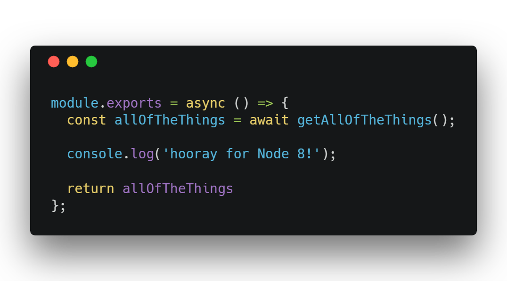

But Google Cloud’s Next conference is this week, and they just announced the new Node 8 runtime.
I miss my async/await from Node 8, so I spent the morning upgrading my Cloud Functions.
async/await comes to Cloud Functions for Firebase
Steps to Upgrade to Node 8
Here’s what you need to do to get on the Node 8 train:
-
Upgrade your
firebase-functionsversion to2.0.0 -
Upgrade
firebase-toolsto4.0.0 -
Add
"engines": { "node": "8" }to your/functions/package.json
I had some difficulty figuring out these steps, so I manually deleted a Node 6 version of my function using the GCP console. That may have helped… but I have no way of testing that now.
Why Node 8?
Node 8 has async/await and the spread operator.
There’s probably more… but I don’t care. That’s all that I need right now.
Both of these features have been around on the front end for a while now. Developing in Node 6 has been sad.
Oh yeah… and you can use Node-8-only packages… for whatever that’s worth!
Examples
Here’s the repo that I’m working on right now: firebase-ssr-starter
And there’s a new Node 8 branch of the firebase/functions-samples repo.